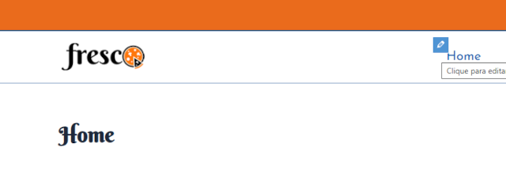
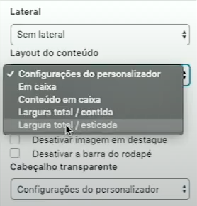
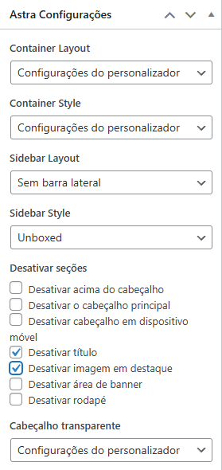

Abra o menu Home
Para fixar uma imagem de fundo (efeito parallax) e garantir que ela se adapte corretamente usando o Elementor, você deve configurar as opções de fundo da seção ou coluna que contém a imagem.
Passo a Passo para Adaptar e Fixar uma Imagem
Edite com Elementor: No painel do WordPress, navegue até a página ou postagem que deseja editar e clique em "Editar com Elementor".
Selecione a Seção ou Coluna: Clique no ícone de seis pontos (para Seção) ou no ícone de coluna (para Coluna) para acessar suas configurações no painel esquerdo.
Acesse a Aba Estilo: No painel esquerdo, clique na aba Estilo.
Adicione a Imagem de Fundo:
Em Fundo (ou Plano de Fundo), selecione o tipo de fundo Clássico (ícone de pincel).
Clique no espaço para escolher sua imagem da Biblioteca de Mídia ou fazer upload de uma nova.
Configure o Anexo para "Fixo":
Localize a opção Anexo (ou Attachment).
Mude de "Padrão" para Fixo. Isso fará com que a imagem de fundo permaneça na mesma posição enquanto o usuário rola a página, criando o efeito parallax.
Adapte o Tamanho e Posição: Para garantir que a imagem se adapte bem a diferentes telas:
Em Posição, selecione Centro Centro (ou a posição que preferir). Em Repetir, selecione Sem repetição (No-repeat). Em Tamanho, selecione Preenchimento completo (Cover). Isso fará com que a imagem cubra toda a área da seção/coluna, independentemente do tamanho da tela.
Ajustes de Layout (Opcional):
Para garantir que a seção tenha altura suficiente para exibir a imagem, vá para a aba Layout na configuração da seção. Em Altura, você pode definir "Ajustar à tela" (Fit to screen) ou uma altura mínima em pixels (px) ou VH (altura da janela de visualização). Verifique a Responsividade: Use o modo responsivo do Elementor (ícone de tela no canto inferior esquerdo) para ver como a imagem se comporta em tablets e celulares, fazendo ajustes finos se necessário.
Seguindo esses passos, sua imagem de fundo ficará fixa e adaptada corretamente no Elementor.
Outras dicas:

Para selecionar a página que você quer de uma forma prática, escolha primeiro a página e em seguida click em
Quando ativar o Editor Classico que fica em Páginas, faça as seguintes alterações.
Detalhe: Quando usar o editor classico não use o editor de bloco, pois se não você perde toda a configuração.

E para Layout do conteúdo, configura: Largura total / esticada

Observe o que foi alterado para não cometer erros.